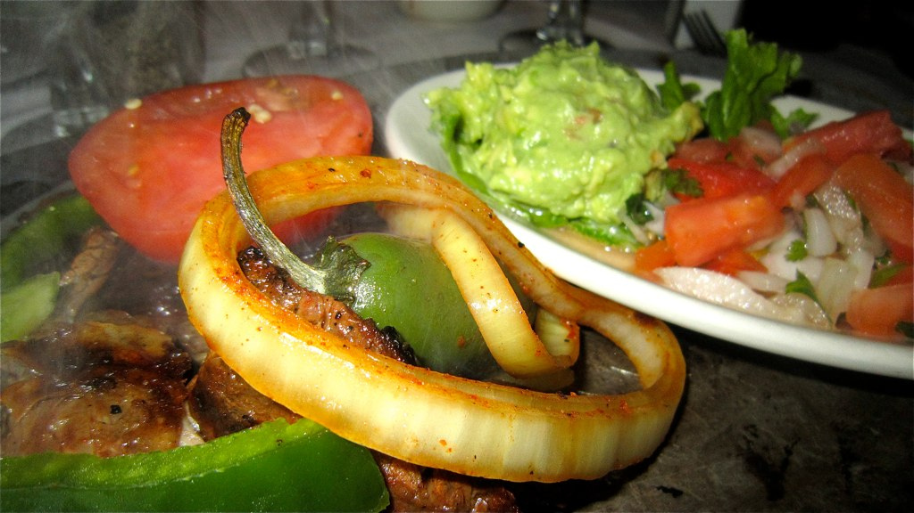

Fajitas
You know how most recipe websites start with a long story about how the author prepared the meal, impressed family, and it's just like momma used to make? Here's none of that. Instead, let's just jump right into the recipe!
Image courtesy of Wikimedia Commons
Ingredients
- Steak or chicken (your choice)
- Bell peppers
- Onions
- Tomatoes
- Guacamole
- Cheese
- Pico de gallo
- Corn or flour tortillas
Instructions
- First, cook the meat in a pan so that it is no longer raw and gross. Add bell peppers and onions. If you're like my wife and don't like onions, then put slightly less onions in the pan. I mean, you still want the onions in there. They're good. Just trust me.
- Once this food is almost done cooking, add the tomatoes. Or put the tomatoes on the site. Your choice.
- Grab a tortilla and add the meat/veggie mix you just made. Garnish with cheese, guac, and some pico.
- Put the fajita into your mouth and chew vigorously. Stare at your dinner guests while you eat to assert dominance.
And don't forget to chew with your mouse closed, otherwise you will look kinda gross.